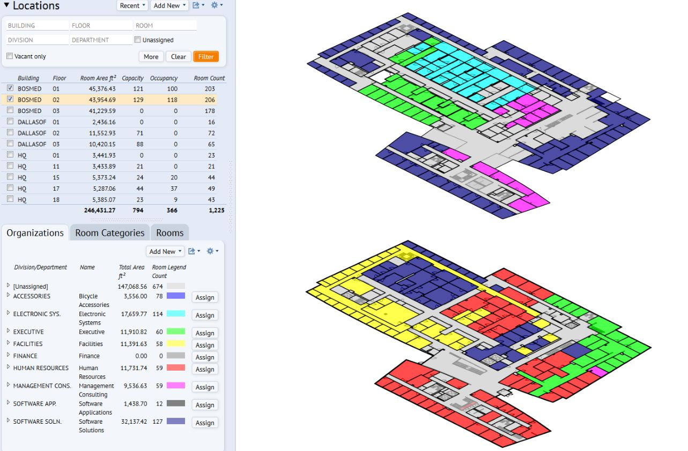

Space Management and Tracking

A process in which BIM is utilized to effectively distribute, manage, and track appropriate spaces and related resources within a facility.
A facility building information model allows the facility management team to analyze the existing use of the space and effectively apply transition planning management towards any applicable changes. Such applications are particularly useful during a project's renovation where building segments are to remain occupied.
Space Management and Tracking ensures the appropriate allocation of spatial resources throughout the life of the facility. This use benefits from the utilization of the record model. This application often requires integration with spatial tracking software.
Potential Value
- More easily identify and allocate space for appropriate building use
- Increase the efficiency of transition planning and management
- Proficiently track the use of current space and resources
- Assist in planning future space needs for the facility
Resources Required
- Bi-directional 3D Model Manipulation; software and record model integration
- Space mapping and management input application
Team Competencies Required
- Ability to manipulate, navigate, and review record model
- Ability to assess current space and assets and mange appropriately for future needs
- Knowledge of facility management applications
- Ability to effectively integrate the record model with the Facility Management's Application and appropriate software associated with the client's needs.